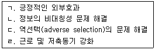
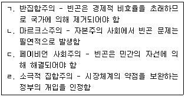

사회복지사-1급(3교시)(구) (2013-01-26 기출문제)
1과목: 사회복지 정책론
1. 사회복지 재화나 서비스를 국가가 제공해야 하는 이유를 모두 고른 것은?

- ㄱ, ㄴ, ㄷ
- ㄱ, ㄷ
- ㄴ, ㄹ
- ㄹ
- ㄱ, ㄴ, ㄷ, ㄹ
(정답률: 39%)

2. 열등처우의 원칙이 적용된 최초의 법은?
- 엘리자베스구빈법(1601년)
- 정주법(1662년)
- 길버트법(1782년)
- 스핀햄랜드법(1795년)
- 신구빈법(1834년)
(정답률: 45%)
3. 독일 비스마르크의 사회입법에 관한 설명으로 옳은 것은?
- 1883년 제정된 질병(건강)보험은 세계 최초의 사회보험이다.
- 1884년 산재보험의 재원은 노사가 반씩 부담하였다.
- 1889년 노령폐질연금이 전 국민을 대상으로 시행되었다.
- 사회민주당이 사회보험 입법을 주도하였다.
- 질병(건강)보험은 전국적으로 일원화된 통합적 조직에 의하여 운영되었다.
(정답률: 50%)
4. 조지(V. George)와 윌딩(P. Wilding)이 제시한 사회복지이념에 관한 설명으로 옳은 것을 모두 고른 것은?

- ㄱ, ㄴ, ㄷ
- ㄱ, ㄷ
- ㄴ, ㄹ
- ㄹ
- ㄱ, ㄴ, ㄷ, ㄹ
(정답률: 39%)
5. 에스핑-안데르센(Esping-Andersen)이 분류한 사회민주주의 복지체제에 관한 설명으로 옳지 않은 것은?
- 대표적인 국가는 스웨덴, 덴마크, 노르웨이 등이다.
- 적극적 노동시장정책을 강조한다.
- 중산층을 중요한 복지의 대상으로 포괄한다.
- 주로 종교단체나 자원봉사조직과 같은 민간부문이 사회서비스를 전달한다.
- 탈상품화 정도가 매우 높다.
(정답률: 45%)